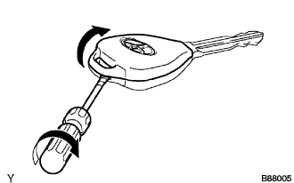
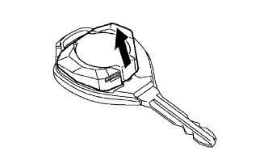
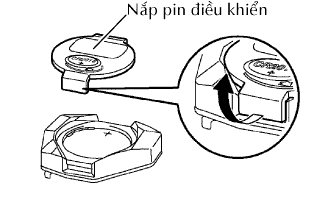
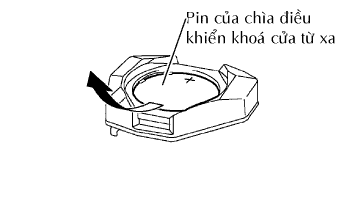

PIN CỦA CHÌA ĐIỀU KHIỂN TỪ XA > THÁO |
| 1. THÁO NẮP VỎ ĐIỀU KHIỂN TỪ XA |
|  |
Vặn tô vít theo hướng chỉ ra bởi mũi tên trong hình vẽ và mở nắp bộ điều khiển từ xa.
| 2. THÁO MODULE BỘ ĐIỀU KHIỂN CỬA TỪ XA |
|  |
Tháo mođun điều khiển khóa cửa từ xa.
| 3. THÁO PIN CỦA CHÌA ĐIỀU KHIỂN TỪ XA |
|  |
Nhả khoá móc của nắp pin điều khiển từ xa và tháo nắp.
|  |
Tháo pin (PIN lithium: CR2016).